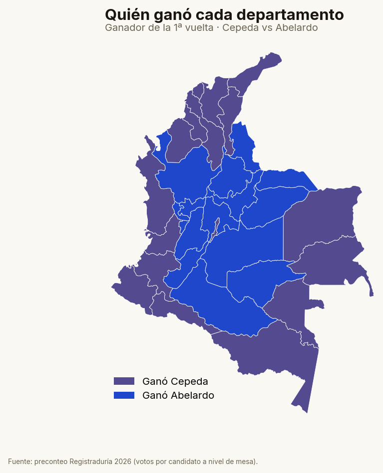
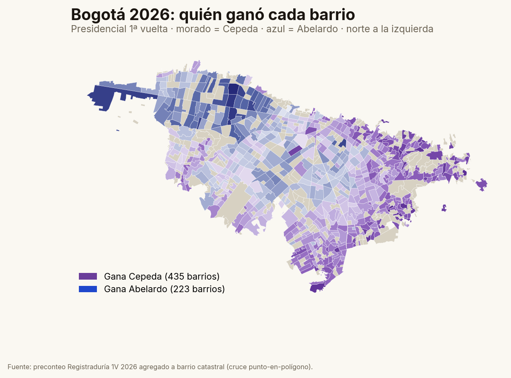
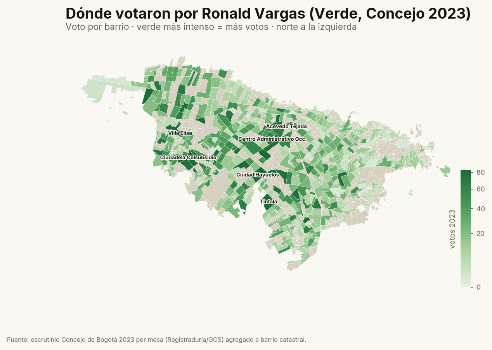
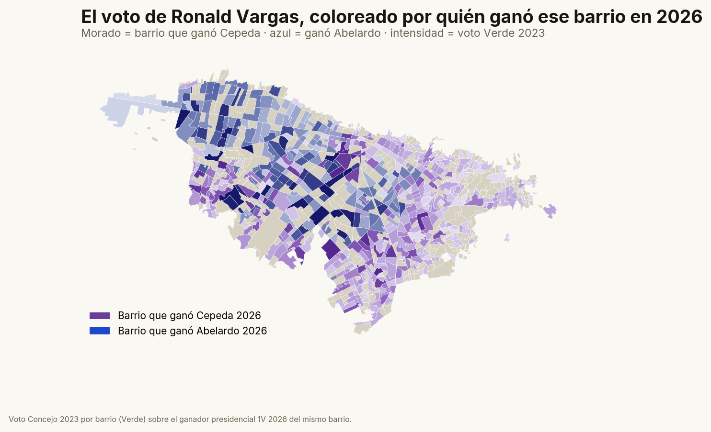
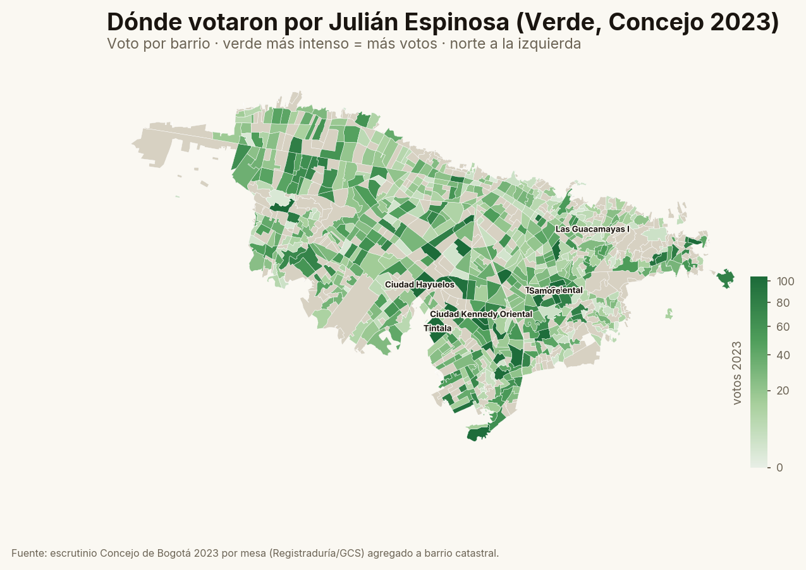
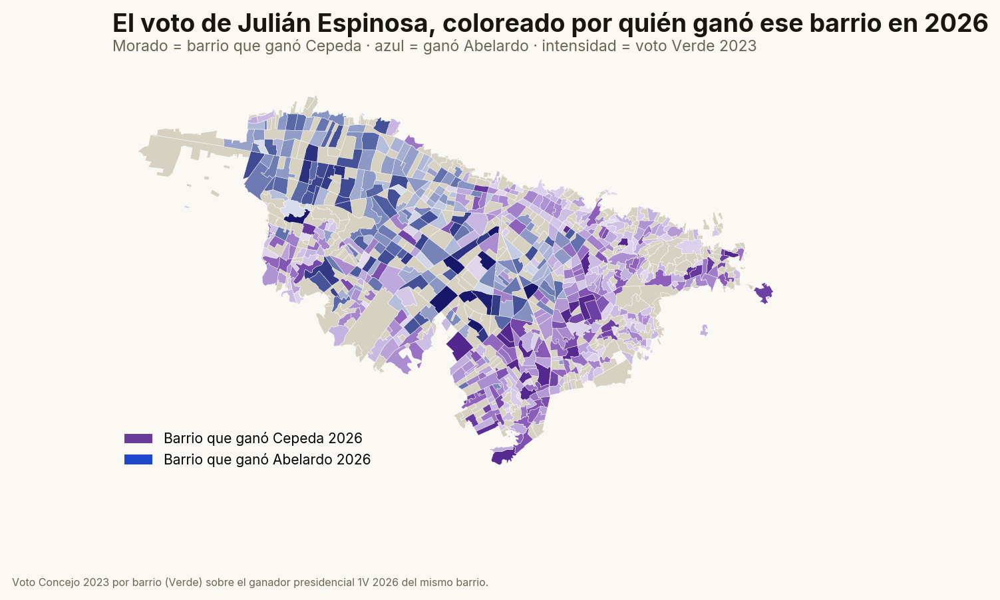

Primera vuelta 2026,
leída hasta el barrio
Del resultado nacional al voto de dos concejales del Partido Verde en Bogotá — y a quién votó hoy su gente.
Ganó Abelardo. Cepeda quedó
a 2,8 puntos.
10.346.010 votos
9.680.095 votos
Paloma 6,9% · Fajardo 4,3% · participación 58%. Margen de ~666 mil votos (2,8 pp).
Se van a 2ª vuelta el 21 de junio. La derecha llega favorita porque se consolidó en primera; la izquierda tiene que sumar el centro y movilizar.

No fue solo izquierda y derecha:
fue joven contra mayor.
% del voto de cada grupo de edad · duelo de los dos punteros (estimación por puesto, con su intervalo). Cepeda puntea en casi todas las edades… menos entre los mayores de 60.

Cepeda ganó la ciudad, pero Bogotá
se partió en dos sobre el mapa.

Cepeda gana el sur y el centro popular: Usme, Bosa, Ciudad Bolívar, San Cristóbal, Kennedy.
Abelardo gana el norte y el occidente acomodado: Usaquén, Chapinero, Suba, Teusaquillo.
Cepeda
Abelardo
Ronald Vargas: 13.942 votos
al Concejo, repartidos así.

Su voto se concentra en el centro-occidente y el norte de clase media.
Top localidades (voto 2023):
Dato real por mesa (Registraduría 2023), agregado a 589 barrios catastrales por punto-en-polígono. Cobertura 99,5%.
Su electorado se inclina a Abelardo
más que el resto de la ciudad.

De cada 100 votos suyos de 2023, hoy viven en barrios que ganó…
Intención 2026 ponderada por su voto, frente al promedio de Bogotá:
Su voto Verde es la franja media del occidente que en 2026 se corrió a la derecha (Hayuelos, Colsubsidio, Federman, Villa Alsacia).
Julián Espinosa: 19.565 votos,
anclados en el sur popular.

Otro Verde, otra ciudad: su voto baja al sur y suroccidente.
Top localidades (voto 2023):
Mismo método: por mesa (2023) a 602 barrios catastrales. Más votos que Ronald y un mapa distinto.
Su electorado calca a la ciudad
y se inclina a Cepeda.

De cada 100 votos suyos de 2023, hoy viven en barrios que ganó…
Intención 2026 ponderada por su voto, frente al promedio de Bogotá:
Su voto es la Bogotá mediana: prácticamente el promedio de la ciudad, ladeado a Cepeda (Tunal, Kennedy, Guacamayas, Gustavo Restrepo).
Dos Verdes, dos Bogotás.
El voto del Partido Verde no es un bloque: se reparte a lado y lado de la fractura de 2026. Julián (sur popular) ladea Cepeda; Ronald (occidente medio) ladea Abelardo, +2,8 pp sobre la ciudad.